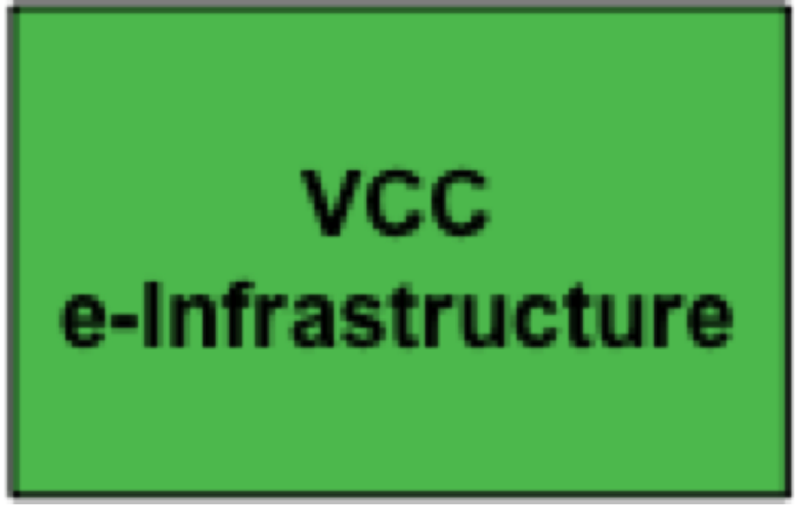

DARIAH operates through its European-wide Virtual Competency Centres (VCCs). VCCs are cross-disciplinary, multi-institutional and international. VCCs will deliver services for all European arts and humanities researchers. Each VCC is centred on a specific area of expertise.
VCC e-Infrastructure will establish a shared technology platform for Arts and Humanities research
- Enable the sharing and integration of community-developed data and tools
- Establish infrastructure services and standards which ensure interoperability across the whole DARIAH ecosystem
- Foster stability, openness and re-usability of scholarly tools and collaborative research environments
 VCC Research and Education Liaison will expose and share researcher's knowledge, methodolo-gies and expertise
VCC Research and Education Liaison will expose and share researcher's knowledge, methodolo-gies and expertise
- Act as the primary contact with the Arts and Humanities research and teaching communities providing the interface between DARIAH and the researchers
- Seek to understand Arts and Humanities research practices and processes
- Promote the use and application of ICT-enabled method and tools, with a particular emphasis on interdisciplinary understanding and exchange
 VCC Scholarly Content Management will facilitate the exposure and sharing of scholarly content
VCC Scholarly Content Management will facilitate the exposure and sharing of scholarly content
- Consider the various stages in the scholarly content life cycle from creation and curation through to dissemination and reuse
- Offer services and resources for the representation and management of data
- Enable the enhancement of data quality, preservation and interoperability, as well as furthering a culture of data sharing in the Arts and Humanities
VCC Advocacy, Impact and Outreach will interface with key influencers in and for the Arts and Humanities